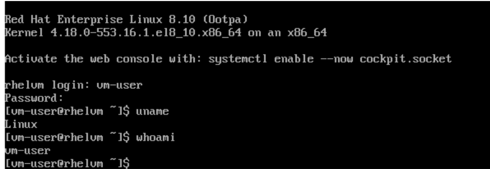
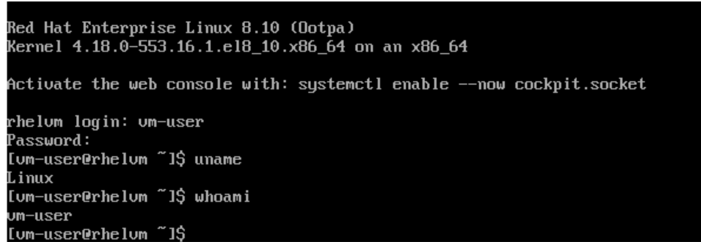

Solution Pattern: Modernize your VM workloads using ROSA with OpenShift Virtualization
Workshop
Here are the workshops which are already available on demo.redhat.com:
Now we will be looking at our first scenario: Create Virtual Machines using GitOps on ROSA.
-
Installing the environment
-
Create an environment using this link.
-
-
Delivering the workshop
-
Login to the bastion host available in the above CI.
-
Now fork this repo under your github account and after that clone the repo into the bastion host. Configure oc cli using the admin logins.
-
Run ./bootstrap.sh from virtdemos directory. It will deploy the OpenShift GitOps operator.
-
After 2 mins, you will be able to see the OpenShift GitOps operator under Installed operators in OpenShift Console.
-
Now let us get the url from Routes under Networking for OpenShift GitOps server(ArgoCD) and open this url.
-
It will open the ArgoCD login screen, now click on “Login via OpenShift” and enter the credentials for OpenShift. After that we will see this screen:
-
Now we will create a RHEL VM by creating an argocd app using this cli from virtdemos directory: oc apply -f apps/ap.yaml
-
It will create an application in ArgoCD which in turn will create a RHEL Virtual Machine in OpenShift as shown in below images.
-
We can see this virtual machine from the OpenShift console → Virtualization → Virtual Machines and we can connect it to the VM using the password we provided in rhel vm yaml.
 
 -
Now we have successfully deployed a RHEL VM using GitOps in OpenShift and are able to access it using the credentials.
-